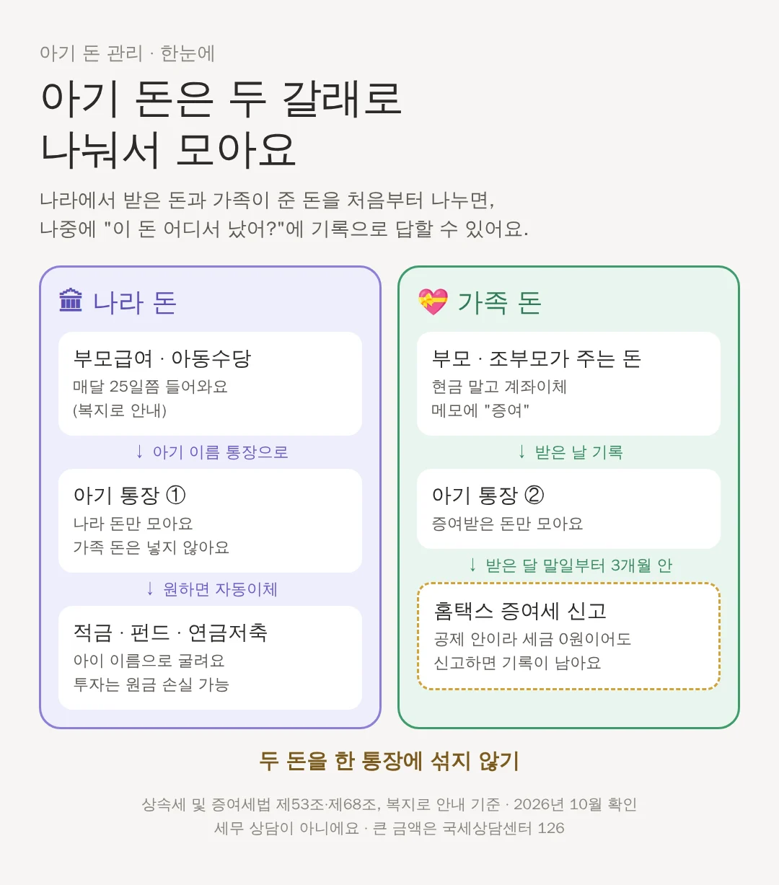

아기 통장, 나라 돈과 가족 돈은 나눠 모아요 (부모급여·아동수당·연금저축)
부모급여·아동수당, 할머니 용돈, 돌잔치 축하금을 한 통장에 섞으면 나중에 어떤 돈이 어디서 왔는지 가르기 어려워요. 처음부터 통장 두 개로 나누는 방법을 정리했어요.
📌 3줄 요약
- 나라에서 받는 돈과 가족이 준 돈은 통장을 나눠서 모아요.
- 가족이 준 돈은 계좌이체로 받고, 받은 달 말일부터 3개월 안에 증여세 신고를 해 두면 기록이 남아요.
- 연금저축은 한 사람 모든 연금계좌를 합쳐 1년에 1,800만 원까지 넣을 수 있어요.
왜 나눠야 할까요?

아이 통장에 들어오는 돈은 크게 두 가지예요. 하나는 부모급여·아동수당처럼 나라에서 주는 돈이고, 다른 하나는 부모·조부모가 주는 돈이에요. 가족이 준 돈은 증여라서 공제 금액(미성년 10년 2,000만 원)을 세고 신고 기록을 남겨야 해요. 두 돈이 한 통장에 섞이면 나중에 어느 돈이 증여였는지 가르기 어려워요. 그래서 처음부터 통장을 나누면 기록이 단순해져요.
나라 돈: 부모급여·아동수당
부모급여와 아동수당은 복지로나 정부24에서 신청하고, 매달 25일에 들어와요(토요일·공휴일이면 그 전날). 출생일을 포함해 60일 안에 신청하면 태어난 달부터 받을 수 있어요. 2026년 부모급여는 0살(0~11개월) 월 100만 원, 1살(12~23개월) 월 50만 원이에요. 어린이집을 다니면 일부가 보육료로 바뀌어요. 이 돈을 아이 이름 통장으로 받거나 옮겨서 아이 몫으로 모으는 집이 많아요. 이 돈을 아이 통장에 넣는 것을 국세청이 어떻게 보는지는 이 글에서 공식 안내를 찾지 못했어요.
가족 돈: 증여 통장 따로
부모·조부모가 주는 돈은 현금 말고 계좌이체로, 메모에 '증여'라고 적어서 아이의 두 번째 통장으로 받아요. 받은 날과 금액을 적어 두고, 받은 달 말일부터 3개월 안에 홈택스로 증여세 신고를 하면 기록이 남아요. 미성년 아이는 부모·조부모가 준 돈을 모두 합쳐 10년 동안 2,000만 원까지 세금이 없어요.
굴린다면: 적금·펀드·연금저축
모은 돈을 아이 이름으로 적금이나 펀드에 넣는 집도 있어요. 연금저축은 한 사람이 가진 모든 연금계좌(연금저축·IRP 등)를 합쳐 1년에 1,800만 원까지 넣을 수 있어요. 연금으로 받으려면 55살 이후, 가입한 지 5년이 지나야 해요. 세액공제를 받지 않은 원금은 이미 세금을 낸 돈으로 보아 꺼낼 때 다시 세금을 매기지 않지만, 불어난 수익을 연금이 아닌 방법으로 꺼내면 세금이 붙어요. 아이 이름으로 연금저축을 열 수 있는지와 서류는 금융회사마다 달라서 확인해야 해요. 펀드·ETF는 원금을 잃을 수 있어요.
해마다 한 번, 잔고 기록
해마다 한 번 날을 정해 두 통장의 잔고와 거래 내역을 내려받아 한 폴더에 모아 두세요. 언제 얼마가 들어와 어떻게 불었는지가 그대로 남아요. 10년, 20년 뒤 아이에게 돈을 넘겨줄 때 그 기록이 가장 쉬운 설명이 돼요. 이건 법이 정한 의무가 아니라 이 사이트가 권하는 기록 습관이에요.
⚠️ 세무·투자 상담이 아니에요. 2026년 10월에 검색으로 확인한 법 조문과 공공 안내를 쉽게 옮긴 것이에요. 특정 금융상품을 권하지 않아요. 부모급여 금액과 연금계좌 규칙은 해마다 바뀔 수 있으니 복지로와 금융회사에서 다시 확인하세요.
📖 어려운 말 풀이
- 보육료
- 어린이집에 다니는 데 드는 비용이에요.
📚 출처
📄 상속세 및 증여세법
법제처 국가법령정보센터 · 제46조·제47조·제53조·제53조의2·제55조·제57조·제68조·제69조
👤 누가 쓴 자료예요? 국회가 만든 법률을 법제처가 원문 그대로 공개하는 곳이에요. 증여세를 매기기 전에 빼 주는 금액(증여재산공제), 조부모 할증, 신고 기한이 이 법에 적혀 있어요.
📄 소득세법 시행령
법제처 국가법령정보센터 · 제40조의2(연금계좌 등)
👤 누가 쓴 자료예요? 연금저축 같은 연금계좌에 1년에 얼마까지 넣을 수 있는지, 언제부터 연금으로 받을 수 있는지가 이 시행령에 있어요.
📄 부모급여·아동수당 안내
보건복지부 복지로
👤 누가 쓴 자료예요? 보건복지부가 운영하는 복지 서비스 안내·신청 사이트예요. 부모급여와 아동수당을 여기서 신청해요.
🔎 자료에 적힌 내용만 옮겼어요 · 자료를 고르고 옮기는 방법